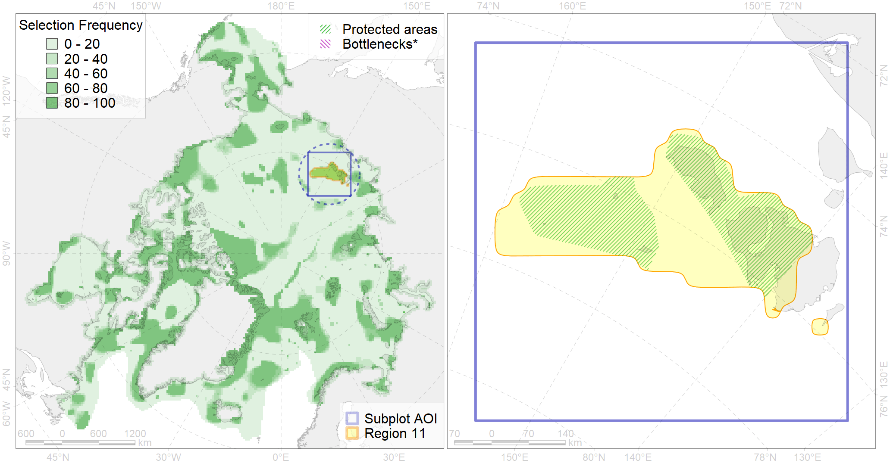

Region 11
Region 11
“ArcNet” scenario 33 achievement for region 11.
Use Accenter for advanced mode.

0
CFs inside of Region completely
5
CFs inside of Region at quarter
5
Complete-targets achievement by Region
11
Half-targets achievement by Region
| CF | Name | Target Achievement for Region | Proportion of Target Achievement in Region | Amount Proportion in Region |
|---|---|---|---|---|
| 7007 | New Siberian Islands area of increased benthic biomass | 102.2% | 99.2% | 74.2% |
| 1013 | Laptev Walrus haulouts | 48.1% | 46.0% | 45.7% |
| 6104 | 6104 Urilomvieleonorae breeding colonies | 95.4% | 54.1% | 36.1% |
| 6080 | Thick-billed murre (Uria lomvia eleonorae) breeding colonies | 61.7% | 42.5% | 33.3% |
| 3112 | polynya Laptev E | 158.2% | 48.9% | 32.3% |
| 9030 | polar bear denning areas of LV (Laptev Sea) subpopulation | 44.6% | 44.5% | 24.4% |
| 6045 | Stellers eider (Polysticta stelleri) Pacific moulting&migration stopovers | 41.8% | 38.8% | 22.1% |
| 1014 | Laptev Walrus Whelping patches | 71.5% | 30.5% | 17.6% |
| 7105 | II.1.1.14. East Siberian middle shelf | 277.4% | 77.2% | 14.7% |
| 7104 | II.1.1.13. East Siberian iInner shelf | 215.0% | 54.9% | 13.1% |
| 6011 | Brent goose (Branta bernicla nigricans) Asian breeding&moulting grounds | 63.0% | 23.2% | 11.5% |
| 6073 | King eider (Somateria spectabilis) Pacific moulting&migration stopovers | 22.7% | 19.7% | 10.9% |
| 4092 | Estuarian (Indigirka-Kolyma) brackish –water fish complex | 157.3% | 51.6% | 9.6% |
| 3039 | Marginal Ice Zone distribution in July in the Laptev Sea LME | 39.7% | 34.0% | 9.6% |
| 7035 | Siberian shelf region | 92.0% | 26.2% | 8.0% |
| 6100 | 6100 Risstridactylpollicarius breeding colonies | 10.5% | 10.5% | 7.2% |
| 7056 | cold seeps and mud vulcanoes | 9.5% | 9.1% | 7.1% |
| 4077 | Fish zoogeography, Arctic Region, High-Arctic Shelf Province, Laptev – East-Siberian District (10D) | 44.4% | 23.5% | 5.5% |
| 7106 | II.1.1.15. East Siberian outer shelf | 44.4% | 38.4% | 5.3% |
| 6066 | Common eider (Somateria mollissima v-nigrum) breeding&moulting grounds | 15.3% | 15.1% | 5.2% |
| 2013 | Bearded seal whelping areas in the Laptev Sea | 19.6% | 9.2% | 4.9% |
| 3008 | Fast ice distribution in the Eastern part of the Laptev Sea and the East-Siberian Sea | 78.1% | 16.8% | 4.8% |
| 4008 | Feeding / nursery area of the Arctic Cisco (Coregonus autumnalis), Eurasian populations (F 14) | 11.0% | 10.3% | 4.3% |
| 4018 | Feeding area of the Vendace, Least cisco (Coregonus sardinellа), Euro-Asian populations (F 20) | 15.0% | 7.9% | 3.7% |
| 3058 | Multiyear Ice distribution in September in the East-Siberian Sea LME | 16.5% | 16.4% | 3.5% |
| 2009 | Bearded seal whelping areas in the East-Siberian Sea | 25.3% | 16.9% | 3.5% |
| 6048 | Black-legged kittiwake (Rissa tridactyla tridactyla) breeding colonies | 4.6% | 3.4% | 3.0% |
| 7026 | Eurasian shelf region | 30.6% | 12.5% | 2.9% |
| 4036 | Distribution of the Borisov’s Arctic cod (Arctogadus borisovi) (F33) | 20.6% | 9.1% | 2.8% |
| 4030 | Feeding area of the Arctic charr (Salvelinus alpinus), anadromous populations (F28) | 6.9% | 6.1% | 2.7% |
| 5007 | Beluga of the Barents-Kara-Laptev Sea stock general distribution | 9.6% | 6.4% | 2.4% |
| 3028 | Marginal Ice Zone distribution in April in the Laptev Sea LME | 18.1% | 3.1% | 2.2% |
| 3040 | Marginal Ice Zone distribution in July in the East-Siberian Sea LME | 8.4% | 8.4% | 2.2% |
| 9012 | polar bear of the LV (Laptev Sea) subpopulation distribution | 6.9% | 5.7% | 1.9% |
| 6015 | Black guillemot (Cepphus grylle mandti) breeding grounds | 14.5% | 3.1% | 1.8% |
| 4058 | Range of the Arctic flounder (Liopsetta glacialis) (F48) | 27.1% | 3.5% | 1.6% |
| 4037 | Distribution of the Glacial cod (Arctogadus glacialis) (F34) | 15.7% | 3.8% | 1.5% |
| 6030 | Glaucous gull (Larus hyperboreus pallidissimus) breeding grounds | 9.0% | 1.5% | 1.1% |
| 7114 | II.1.1.8. Laptev inner shelf | 11.6% | 2.6% | 1.0% |
| 3057 | Multiyear Ice distribution in September in the Laptev Sea LME | 4.4% | 1.6% | 0.8% |
| 4041 | Range of the Polar Cod (Boreogadus saida) (F35) | 4.7% | 1.8% | 0.6% |
| 2061 | Ringed seal circumpolar foraging areas as predicted by MIZ distribution | 1.4% | 0.8% | 0.4% |
| 9001 | polar bear of the AB (Arctic Basin) subpopulation distribution | 0.7% | 0.7% | 0.3% |
| 5112 | Arctic Cetaceans (beluga, bowhead, narwhal) winter habitats as predicterd by MIZ | 0.4% | 0.3% | 0.2% |
| 5090 | Narwhal in the Russian Arctic assumed summer range | 0.5% | 0.3% | 0.1% |
| 7115 | II.1.1.9. Laptev middle shelf | 0.4% | 0.2% | 0.1% |